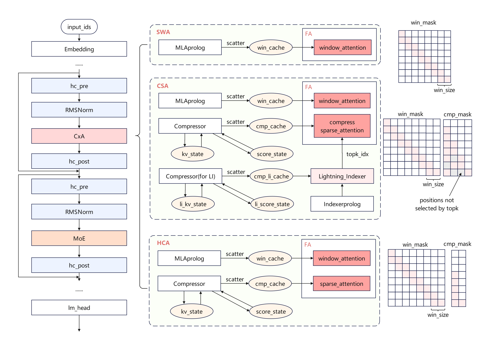
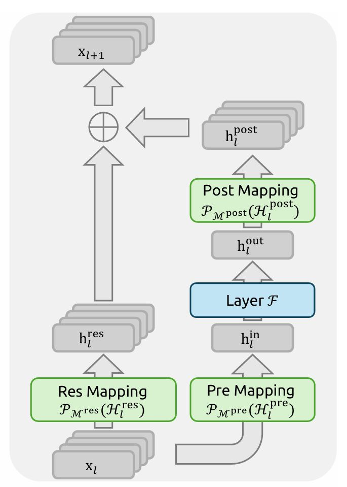
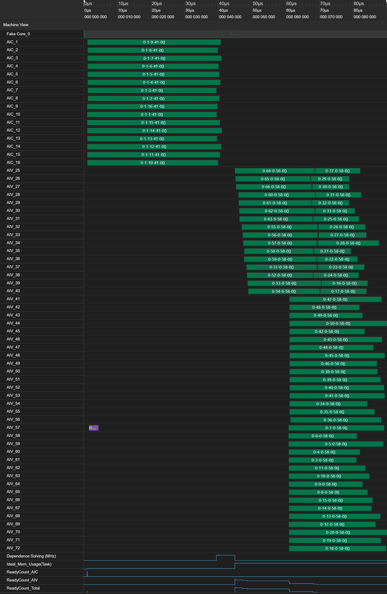

- DeepSeek-V4 真正重要的不是模型更大，而是 long-context 的成本曲线被结构和 runtime 一起改了。
CSA + HCA不是两个零散 trick，而是按距离分层的 hybrid attention；mHC负责把这条路径稳定下来。Muon、iterative clip、KV cache 和融合算子不是附属工程，而是把这套结构推到可训练、可部署区间的配套条件。
1. Overview
论文的正式标题是 DeepSeek-V4: Towards Highly Efficient Million-Token Context Intelligence，PDF 原文可见：https://huggingface.co/deepseek-ai/DeepSeek-V4-Pro/blob/main/DeepSeek_V4.pdf。这个标题本身已经把讨论边界说得很清楚：重点不是更大的参数规模，而是 million-token context 在效率上的可实现性。
如果要先用一句话概括这篇工作的核心贡献，那就是：它试图突破现有大模型在处理超长上下文时的效率瓶颈，并且把这个目标同时落实到模型结构、训练稳定性和运行时实现里。
更具体地说，通过采用混合的 CSA 和 HCA，再加上对计算和存储的精度优化，与 DeepSeek-V3.2 相比，DeepSeek-V4 系列实现了显著更低的推理 FLOPs 和大幅缩小的 KV cache 大小，尤其是在长上下文场景下。
长上下文已经不是“能不能做”的问题，而是“能不能正常部署”的问题。上下文一旦拉到百万级，注意力计算、KV cache、通信和存储层次会一起上升成系统瓶颈。如果论文只是在介绍一个新的 attention trick，它最多只能说明结构有意思，不能说明系统真的付得起。
DeepSeek-V4 的价值在于，它没有把问题写小。它真正回答的是：远场上下文为什么会把成本推爆，单一路径压缩为什么容易把质量一起压坏，以及如果目标是 reasoning 和 agent loop，结构和 serving economics 应该怎样一起设计。
如果把发布背景也算进去，这次还有一个很强的额外感受。大概从春节前开始，外部就一直处在一种“V4 下周就发”的等待里。真正发出来以后，我印象最深的反而不是某个 headline，而是官方稿件里那句「不诱于誉, 不恐于诽, 率道而行, 端然正己。」这句话和 V4 本身的工程气质很一致：少一点姿态，多一点把路线走通。引文来源可参见官方公众号稿件和官方新闻页：
我读这篇论文时最先停下来的地方，不是 benchmark，而是它默认你已经接受一件事：长上下文到了这个级别，先坏掉的通常不是模型想法，而是系统预算。

2. 模型架构
在结构层面，总体可以先把 DeepSeek-V4 理解成“保留主干、重写长上下文路径”的版本。DeepSeek-V4 系列保留了 Transformer 架构和多 Token 预测（MTP）模块，同时在 DeepSeek-V3 的基础上引入了若干关键升级：
- 引入流形约束超连接（
mHC）来增强传统残差连接。 - 设计混合注意力架构，通过压缩稀疏注意力和重度压缩注意力显著提升长上下文效率。
如果只记模块名，很容易把 DeepSeek-V4 读成一篇“又加了两个注意力变体”的论文。更准确的读法是：它把 attention 拆成了分层职责明确的 hybrid path。近场路径保精度，中远场路径做压缩和选择，极远场路径进一步做高倍率摘要。
真正把 1M context 推出工程区间的，从来不是某一个矩阵乘，而是你是否还在用同一种表示去覆盖完全不同的距离分布。V4 的关键判断是：attention 本来就不该是单一路径。
CSA：压缩远场，但保留近场精度
CSA 的逻辑比较直接。它先把一段 token 的 KV 压缩成更粗的表示，然后只对压缩后的表示做选择性注意力，同时保留 sliding-window 分支，确保最近上下文仍然有高分辨率路径。
这里还有一个很具体但很重要的实现细节。在 CSA 的架构图里，压缩后的 KV 上还会额外拼接一个 128 token 的滑动窗口 KV。这样一来，Q 和 KV 在 seq 维度上就不再一致：Q 仍然对应当前查询序列，而 KV 则是“压缩远场表示 + 近场滑动窗口”的拼接结果。在这种情况下，V4 这里比较直接地选择了 MQA 的处理方式，把这类不对称的 Q/KV 访问路径先稳定地落到 attention 实现上。
这么做还有一个直接的数值动机：避免注意力 logits 在这类拼接后的不对称路径里进一步放大。尤其当远场压缩表示和近场窗口表示同时进入同一条 attention 路径时，如果处理方式不够克制，logits 很容易因为尺度不一致而变得更难控制。
- 压缩负责把 sequence-level memory footprint 压下来。
- 稀疏选择负责把远场计算量压下来。
- sliding-window 分支负责保住局部高分辨率依赖。
HCA：把极长路径的代价进一步砍掉
HCA 的任务更直接。它不是在近场精度上做平衡，而是在更远的路径上换取更高压缩倍率，让“表示更少”直接转化成“代价更低”。
单一路径压缩通常只能在精度和成本之间硬选一个。V4 的方法是先承认不同距离有不同语义，再把这个事实写进结构里：
- 最近邻上下文需要密集、局部、细粒度的访问。
- 可选择的远场上下文需要压缩后再检索。
- 更远的长尾上下文只值得保留少量高价值摘要。
这就是 hybrid attention 真正值钱的地方。它不是把几个 trick 拼盘式地塞进模型，而是把“距离”本身变成了架构变量。
为什么这里不用 engram
如果目标是 reasoning、agent trace 和长链条工具调用，engram 这类更偏记忆体语义的路线并不是不能工作，但它回答的问题和 V4 不一样。engram 更像在问能不能把历史压成可召回的记忆单元；V4 在问，如果上下文长度本身不消失，在线推理成本怎么下降。
engram倾向把长历史转成显式 memory abstraction。- V4 则优先把原始 token 路径本身做便宜。
这让 V4 避免额外引入记忆接口、召回一致性语义和新的失真来源。它更保守，但也更适合通用 serving。
mHC：把残差稳定性提升成基础设施
长上下文压缩、MoE、混合精度和定制 kernel 一旦叠起来，模型不会天然稳定。mHC 的作用不是让结构更复杂，而是把残差稳定性提升成基础设施。

mHC 和 attention 的关系也不是简单的前后相邻，而是互相兜底：hybrid attention 负责改写成本结构，mHC 负责让这条新路径仍然保有可训练、可叠加、可放大的残差行为。
特别是在 MoE、低精度和长路径压缩叠加时，先出问题的往往不是理论容量，而是信号传输的一致性。
Muon、iterative clip 为什么也属于主线
如果只把 V4 理解成 inference 论文，就会漏掉一个事实：它之所以敢这么激进，是因为训练侧在主动给这套结构铺路。Muon、iterative clip 这些东西不只是优化器或稳定化小技巧，而是在处理三个直接问题：
- 更复杂的混合路径会放大梯度统计的不均匀。
- 更长的上下文会放大训练后期的极端更新。
- 更多并行和混合精度会让偶发不稳定更容易积累成系统性问题。
这里还有一个值得强调的点。DeepSeek-V4 的注意力架构允许直接在 attention query 和 KV 条目上应用 RMSNorm，这会显著降低 attention logits 爆炸的风险。也正因为这层数值稳定性已经前移到 attention 结构本身，Muon 优化器这里不再需要采用 QK-Clip 这类补丁式约束。换句话说，Muon 的改进不是孤立发生的，它依赖于前面的 attention 设计已经先把最容易失控的数值路径压住。
更合理的理解是，V4 不是先有一个完美结构，再让训练去适配；而是结构、残差和训练约束一起协商出一个能放大的工作点。
如果继续往训练框架层看，V4 的效率改进也不只是优化器本身。它通过张量级别的 checkpointing 扩展了自动求导框架，以实现更细粒度的重计算控制；同时又围绕 Muon 设计了混合 ZeRO 策略，叠加通过重计算和融合核实现的低成本 mHC，以及用于管理压缩注意力的两阶段上下文并行。这些东西单独看都像框架细节，但合起来决定了这套结构能不能在训练侧跑得动。
3. 系统与效率
DeepSeek-V4 更像系统论文，是因为它没有把收益停在模型图上。MoE 的问题不只是单算子快不快，而是 dispatch、compute、combine 能不能真正重叠。KV cache 的问题也不再是分几块显存，而是怎样被当成分层存储系统来处理。
如果只看运行时，这一段很容易被理解成纯调度问题，但 V4 在 MoE 模块本身也沿着 DeepSeek-V3 做了改进。路由上可以区分出两类方式：一类是传统的 learned routing，另一类是 hash routing。与此同时，路由计算里的 softmax 也被替换成了 softplus + sqrt 形式。这个改动的意义不只是“换一个函数”，而是让路由打分和归一化的数值行为更可控，避免路由分布过于尖锐，把前面的长上下文和混合路径压力进一步放大到专家选择上。
更关键的是，论文里结合 MegaMoE 的做法，试图把 MoE 上最昂贵的几条路径一起重排掉：计算、通信和内存访问尽量完全重叠。这个方向很重要，因为对 MoE 来说，系统瓶颈往往不是专家算子本身，而是专家之间的数据搬运和等待时间。V4 在这块的思路很明确，就是不要让专家计算孤立地跑，而是把它放回整条流水线里看。
同样地，FP4、deterministic kernels、shared-prefix reuse、on-disk reuse 这些词单看都像工程细节，但合起来才是“这套结构能不能真的跑”的答案。
这里我最认同的一点是：一旦 context 进入百万级，KV cache 就不该再被写成“实现细节”。它已经是存储系统问题了。
更进一步说，hybrid attention 能不能成立，很大程度上取决于 KV cache 语义有没有一起变。因为一旦同时存在原始窗口、高压缩表示、远场索引和 prefix reuse，cache 里存的就不再只是某层某头的 K/V 张量，而是多种距离层次和多种更新粒度共存的状态。
推理框架层面，V4 这里进一步把这件事落成了一种异构 KV cache 结构，并且引入磁盘存储策略来支持高效的 shared-prefix reuse。也就是说，它不是把前缀复用理解成一次性的工程优化，而是直接把“热前缀在更高层、冷前缀可以下沉”写进了缓存设计里。

FP4、定制 kernel 和融合算子，才是“能不能真的跑”的分界线
这些词单看都像工程细节，但合起来才构成 V4 的真正声明：结构创新不是停在论文图上，而是进入了长期可维护的软件系统。从现有实现文档看，Compressor、CompressEpilog、LightningIndexer、SAS、hc_pre、hc_post 这些融合算子也不只是省一次 launch。它们更大的作用，是把 V4 新引入的数据路径直接固化进执行图里。
- 压缩和 cache 更新一起发生。
- 索引选择和 attention 前处理一起发生。
mHC的 pre/post mapping 被做成稳定的前后处理路径。
在低精度这块，V4 还把 FP4 量化感知训练明确用到了 MoE 专家权重和 indexer 的 QK 路径上。这个选择的重点不是“又多了一种量化格式”，而是它同时在压权重内存、访存带宽和相关计算量。
另一方面，部分 kernel 明确使用了 TileLang 来平衡开发生产力和运行时效率。这类选择的价值在于，复杂融合算子不再只能依赖极重的手写后端，而是开始有机会在可维护性和性能之间找到中间地带。
再往下看，训推一致也是这一段不能忽略的点。V4 提供了高效的 batch-invariant 和 deterministic 算子库来保证训推一致，这意味着同一套结构不只是“训练时能跑、推理时也能跑”，而是两边尽量共享相同的数值行为和执行语义。
hybrid attention 一旦上线，真正的瓶颈通常不是理论 FLOPs，而是张量搬运、cache 写回、同步点和跨流调度。融合算子做的事，本质上是在减少结构设计和实际执行之间的缝。
如果想直接看运行时落地而不是只看论文描述，一个比较好的入口是官方公开的 inference 目录：https://huggingface.co/deepseek-ai/DeepSeek-V4-Pro/tree/main/inference。这个入口至少能把“结构怎么落到推理侧”这件事和具体实现路径对应起来。
- 优化 EP 时，不要只盯 GEMM，要盯调度级重叠。
- KV cache 要按存储层次看，而不是按临时缓存看。
- deterministic runtime 会越来越早地进入主舞台。
这篇论文真正值钱的，是成本曲线真的被改了
最值得盯住的一组数字，不是单个 benchmark，而是 1M context 下的推理 FLOPs 和 KV cache。按照论文表述，相比 DeepSeek-V3.2，DeepSeek-V4-Pro 在 1M context 下只需要 27% 的 single-token inference FLOPs 和 10% 的 KV cache；DeepSeek-V4-Flash 分别只需要 10% 和 7%。
这些结果和前面的结构分析是对应的。混合 CSA / HCA 负责把远场路径的表示和访问成本压下来，计算与存储精度优化进一步把推理 FLOPs 和 KV cache 往下压，因此长上下文下的收益会比短上下文更明显。
如果这些收益在真实 workload 下大体成立，那么长上下文的讨论重心就变了。问题不再是“能不能支持更长 token”，而是“更长 token 有没有进入可运营区间”。
4. 小结
它在说另一件更重要的事：如果目标是让 reasoning、agent loop 和超长上下文真正可用，那么模型结构、残差路径、KV cache、并行调度和 runtime 必须一起被设计。DeepSeek-V4 值得记住的地方，就在这里。
如果把全文压成最后一句结论，我的判断会更直接一点：除了对 Infra 团队不太友好以外，这仍然是一个非常不错的工作。原因也很明确，它在算力和 KV cache 开销上都做了大幅降低，这不仅让长上下文推理更接近可运营区间，也会利好在国产卡平台上构建更低成本的推理系统。
如果要把这次发布的技术判断和气质判断压成一句话，我会保留官方稿件里的那句：「不诱于誉, 不恐于诽, 率道而行, 端然正己。」它放在这里并不是为了做态度展示，而是因为 V4 的整套设计，确实更像是在按自己的工程路线把问题一层层做穿。